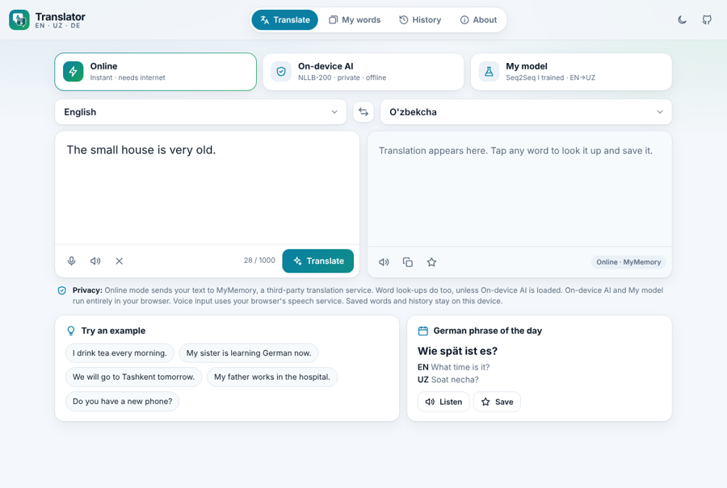

🌐✦ Deep learning ✦
Hands-on projects where I learn deep learning by building things that work: a translator I trained myself, a classifier that reads land from CanSat photos, and a recommender that picks tonight's movie.
If you are learning machine learning or just curious, try them below, then open the code to see how each one is made.
Each theme has a live demo to try and the code behind it.

🌐Language · NLP
A Seq2Seq Transformer I built and trained from scratch, extended into an in-browser English, Uzbek and German translator with word look-ups and German learning tools.
Vision · Images
A classifier that reads the land type (fields, water, buildings and more) from the small camera flying under a CanSat.
Recommenders · Embeddings
Plot summaries, genres and keywords become text embeddings that find what to watch tonight, for one person or two. It hides sequels and movies you have seen.
Everything here is open. Clone the repo and open any project folder; each one has its own README.
git clone https://github.com/PearlM-457/Deep_Learning_Projects.git cd Deep_Learning_Projects
The Translator and Movie Night Picker run in the browser: serve the folder with python -m http.server and open it. Some demos wake up slowly on the first visit.